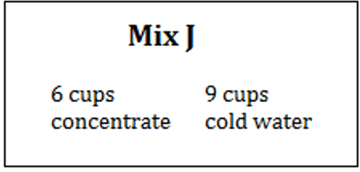

Finance Unit
1.1 Ratios
-
Pellissippi State is hosting a pizza dinner for New Student Orientation. The campus dining room has two kinds of tables. A large table seats ten people. A small table seats eight people. On orientation night, the servers put four pizzas on each large table and three pizzas on each small table. Suppose each table is full and the pizzas are shared equally by everyone at the table. (Pizzas and plates are depicted in the picture below.) Does each person sitting at a small table get the same amount of pizza as a person sitting at a large table? Explain your reasoning.

Large table: \(4/10\) of a pizza = \(2/5=0.4\)

Small table: \(3/8\) of a pizza = \(.375\)
The people sitting at the large table get more pizza.
- Compare these four mixes for apple juice:

- Which mix would make the most “appley” juice?
- Suppose you make a single batch of each mix. What fraction of each batch is concentrate?
- Rewrite your answers to part (b) as percents.
Mix A \(=5/13=0.38=38%\)
Mix E \(=3/9=1/3=0.333=33.3%\)
Mix J \(=6/15=2/5=0.4=40%\)
Mix C \(=3/8=0.375=37.5%\)
Mix J is the most "appley."
- Multiple choice. Which of the following is a correct interpretation of the statement “Women outnumbered men by a ratio of 9 to 5”?
- There were four more women than men.
- The number of women divided by the number of men was equal to the quotient \(5\div9\)
- In the group, five out of nine fans were men.
- The number of women was 1.8 times the number of men.
- Madison can drive her car 480 miles at a steady speed using 15 gallons of gasoline. Complete the table showing the number of miles she can drive her car at this speed using the given amount of gasoline.
Number of gallons of gasoline Number of miles she can drive at this steady speed 1 32 2 64 3 96 4 128 5 160 6 192 7 224 - The Trail Mix Calorie Counter gives the following information on its website. Use the pattern in the table to answer the questions.
Grams of trail mix Calories 50 220 150 660 300 1320 500 2200 - Eddie eats 75 grams of trail mix. How many calories does he eat?
- Claire eats trail mix containing 1000 calories. How many grams of trail mix does she eat?
\(\frac{50\text{ grams}}{220\text{ calories}}=\frac{75\text{ grams}}{x\text{ calories}}\)
\(50x=16500\)
\(\frac{\displaystyle50x}{50}=\frac{\displaystyle16500}{50}\)
\(x=330\)
Eddies eats 330 calories
\(\frac{50\text{ grams}}{220\text{ calories}}=\frac{x\text{ grams}}{1000\text{ calories}}\)
\(50000=220x\)
\(\frac{\displaystyle50000}{220}=\frac{\displaystyle220x}{220}\)
\(x=227\)
Claire eats 227 grams
- When she drives to work, Yvonne travels 10 miles in about 15 minutes. Rico travels 23 miles in about 30 minutes. Who has the faster average speed?
Yvonne: \(10/15= 0.67\) miles per minute
Rico: \(23/30= 0.77\) miles per minute
Rico is driving faster.
- On the winding mountain road to Elkmont campground, visitors travel only 6 miles in 10 minutes.
- At this speed, how long does it take a visitor to travel 18 miles?
\(\frac{6\text{ miles}}{10\text{ minutes}}=\frac{18\text{ miles}}{x\text{ minutes}}\)
\(6x=180\)
\(x=30\)
It takes 30 minutes to travel 18 miles.
- At this speed, how far do visitors go in 15 minutes?
\(\frac{6\text{ miles}}{10\text{ minutes}}=\frac{x\text{ miles}}{15\text{ minutes}}\)
\(90=10x\)
\(x=9\)
The visitor can go 9 miles in 15 minutes.
- At this speed, how long does it take a visitor to travel 18 miles?
- Multiple choice. Choose the fastest walker.
- Steve walks 3 miles in 1 hour.
\(3/1= 3\) miles per hour
- Bill walks 5 miles in 2 hours.
\(5/2= 2.5\) miles per hour
- Joan walks 6 miles in 1.5 hours.
\(6/1.5= 4\) miles per hour
- Deena walks 12 miles in 2.5 hours.
\(12/2.5= 4.8\) miles per hour
- Grete walks 9 miles in 2 hours.
\(9/2= 4.5\) miles per hour
Deena is the fastest walker.
- Steve walks 3 miles in 1 hour.
- The Math Department can purchase calculators in bulk at a price of $1000 for 20. At this rate, how many calculators can they purchase for $1250?
\(\frac{$1000}{20\text{ calculators}}=\frac{$1250}{x\text{ calculators}}\)
\(1000x=25000\)
\(x=25\)
They can purchase 25 calculators.
- Sasha gives vitamins to her dogs. The recommended dosage is 2 teaspoons per day for adult dogs weighing 20 pounds. She needs to give vitamins to Campbell who weighs 75 pounds and to Rosie who weighs 7 pounds. What is the correct dosage for each dog?
Campbell: \(\frac{2\text{ teaspoons}}{20\text{ pounds}}=\frac{x\text{ teaspoons}}{75\text{ pounds}}\)
\(20x=150\)
\(x=7.5\)
Campbell's dosage is 7.5 teaspoons.
Rosie: \(\frac{2\text{ teaspoons}}{20\text{pounds}}=\frac{x\text{ teaspoons}}{7\text{ pounds}}\)
\(20x=14\)
\(x=.7\)
Rosie's dosage is 0.7 teaspoons.
- Brenda and Nancy walk 1 mile in 15 minutes. They can keep up this pace for several hours.
- About how far do they walk in an hour and a half?
\(\frac{1\text{ mile}}{15\text{ minutes}}=\frac{x\text{ miles}}{90\text{ minutes}}\)
\(15x=90\)
\(x=6\)
They walk 6 miles in an hour and a half.
- About how far do they walk in 65 minutes?
\(\frac{1\text{ mile}}{15\text{ minutes}}=\frac{x\text{ miles}}{65\text{ minutes}}\)
\(15x=65\)
\(x=4.3\)
They walk 4.3 miles in 65 minutes.
- About how far do they walk in an hour and a half?
- Which is the better average: 12 of 15 free throws or 8 of 10 free throws?
\(\frac{12}{15}=\frac45\)
\(\frac{8}{10}=\frac45\)
They are the same.
-
Multiple choice. Choose the value that makes \(\frac{18}{30}=\frac{x}{15}\) correct.
- 7
- 8
- 9
- 10
C
x=9
- Multiple choice. Choose the value that makes \(\frac{x}{15} < \frac{3}{5}\) correct.
- 8
- 9
- 10
- 11
A
x=8
- Find the values that make the statement correct \(\frac{\text{blank}}{27}=\frac{8}{36}=\frac{\text{blank}}{63}\).
\(\frac{x}{27}=\frac{8}{36}\)
\(36x=216\)
\(x=6\)
\(\frac{8}{36}=\frac{y}{63}\)
\(36y=504\)
\(y=14\)
\(\frac{6}{27}=\frac{8}{36}=\frac{14}{63}\)
D is the correct answer. The number of women was 1.8 times the number of men